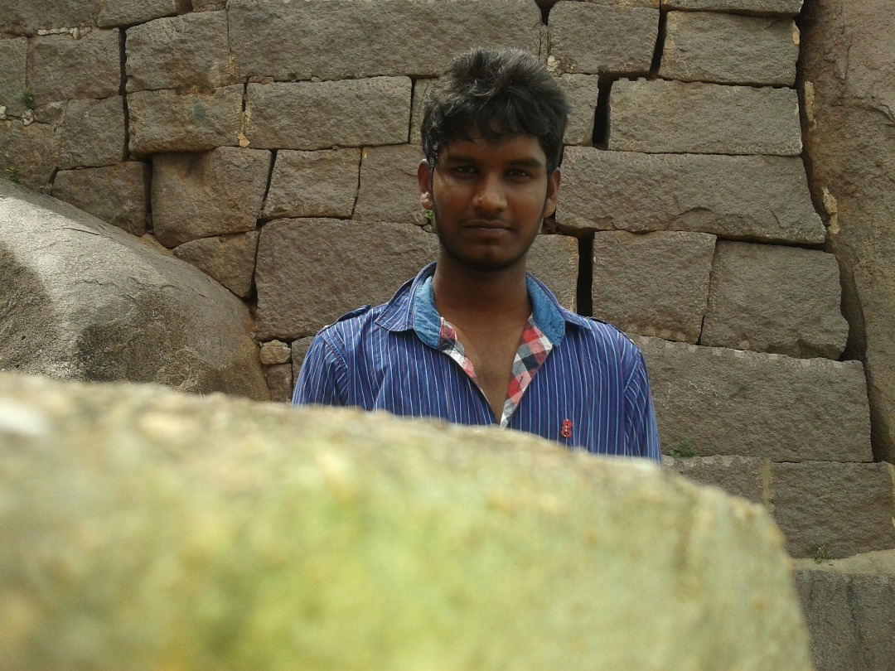
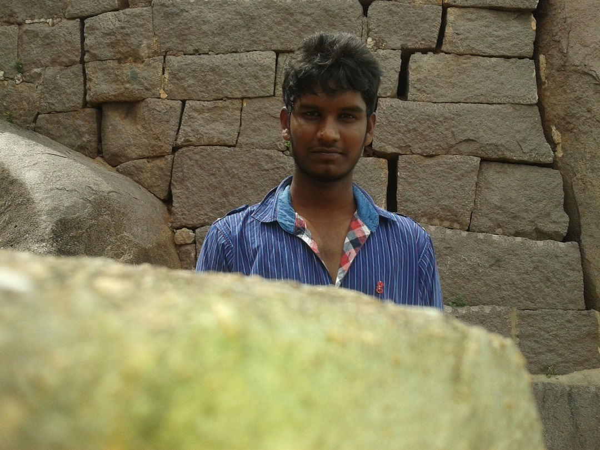

 |--------------------|
| Dream11 Rankings|
|--------------------|
|1 Nihal|0.0|
|2 Kranti|0.0|↓ 0.0
|3 Uma|0.0|↓ 0.0
|4 Manish|0.0|↓ 0.0
|5 Navakanth|0.0|↓ 0.0
|6 Abhilash|0.0|↓ 0.0
|--------------------|
| Nihal| Kranti| Uma| Manish| Navakanth|
|--------------------|--------------------|--------------------|--------------------|--------------------|
| Q de Kock-0.0| PWH de Silva[S]-0.0| Shubman Gill-0.0| V Kohli-0.0| GJ Maxwell-0.0|
| PBB Rajapaksa-0.0| Kuldeep Yadav-0.0|rabhsimran Singh-0.0| KR Mayers-0.0| HH Pandya[C]-0.0|
| YS Chahal[V]-0.0| NT Tilak Varma-0.0| MM Ali[V]-0.0| Umran Malik-0.0| Arshad Khan-0.0|
| RD Gaikwad-0.0| AR Patel[V]-0.0| K Rabada-0.0| R Powell-0.0| N Rana-0.0|
| Ravi Bishnoi-0.0| D Padikkal-0.0| TH David-0.0| WP Saha-0.0| Avesh Khan-0.0|
| MS Dhoni-0.0| Arshdeep Singh-0.0| TA Boult-0.0| RD Chahar-0.0| RA Tripathi-0.0|
| YBK Jaiswal-0.0| BA Stokes[C]-0.0| JC Archer[C]-0.0| KD Karthik-0.0| SV Samson-0.0|
| RA Jadeja[C]-0.0| GD Phillips-0.0| Abhishek Sharma-0.0| MR Marsh-0.0| SP Narine[S]-0.0|
|ohammed Shami[S]-0.0| JC Buttler-0.0| B Kumar-0.0| HV Patel[C]-0.0| C Green-0.0|
| R Ashwin-0.0| AK Markram-0.0| DJ Hooda-0.0| PP Shaw-0.0| MA Agarwal-0.0|
| S Dhawan-0.0| T Natarajan-0.0| Arjun Tendulkar-0.0| SM Curran[S]-0.0| HC Brook-0.0|
|
|
|--------------------|--------------------|--------------------|--------------------|--------------------|
| 0.0[TOP]| 0.0(-0.0)| 0.0(-0.0)| 0.0(-0.0)| 0.0(-0.0)|
|--------------------|--------------------|--------------------|--------------------|--------------------|
| Abhilash|
|--------------------|
| SN Thakur-0.0|
| KL Rahul[V]-0.0|
| MG Bracewell-0.0|
| MP Stoinis-0.0|
| SA Yadav[C]-0.0|
| CV Varun-0.0|
| F du Plessis[S]-0.0|
|ashington Sundar-0.0|
| MS Wade-0.0|
| AD Russell-0.0|
| AT Rayudu-0.0|
|
|
|--------------------|
| 0.0(-0.0)|
|--------------------|